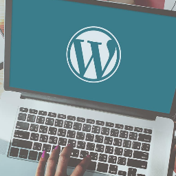

Project#5 Wordpress
Voor dit project moesten we een wordpress website maken. Ik vond dit een zeer leuke opdracht, aangezien ik heel gemakkelijk een zeer mooi resultaat kon hebben. Ik ben dan ook aan dit project begonnen door na te denken over wat ik wou verkopen op mijn webshop. Uiteindelijk heb ik ervoor gekozen om computers te verkopen op mijn webshop.

Technical description
- Met wordpress
- WooCommerce voor het winkelgedeelte
- Jetpack voor de contactform
- Wat dingen personaliseren
- Content zoeken
De website
Over het ben ik heel blij met het resultaat van mijn project. Na veel te proberen en en alle mogelijkheden te vergelijken staat het echt op punt. De website zier er ook heel clean uit. Ik heb zeer veel kunnen bijleren door dit project te mogen doen, en ik ben nog steeds onder de indruk van de vele dingen die je met wordpress kan doen.
Klik hier om naar de webshop te gaan.
